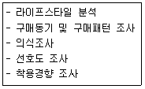

패션머천다이징산업기사 (2014-03-02 기출문제)
1과목: 패션마케팅
1. 소비자가 제품결정을 위한 대안의 평가 시 각 상표별로 한 속성에서 느끼는 단점을 다른 속성의 강점으로 상쇄하여 전반적으로 평가하는 방식은?
- 결합식 방법
- 사전편집식 방법
- 보완적 방법
- 연속제거식 방법
(정답률: 70%)

2. 가격대 별로 패션 상품을 세분화한 것에 대한 설명으로 틀린 것은?
- 프레스티지(prestige) : 상품의 퀼리티와 희소가치가 종요한 유명 디자이너 중심의 최고가의 상품
- 브릿지(bridge) : 패션상품의 양이 중요한 상품으로 초저가 상품
- 베터(better) : 상품의 퀼리티가 중요 요인으로 내셔널브랜드 중심의 고가 설정
- 버짓(budget) : 상품의 가격이 중요 요인으로 낮은 가격 상품
(정답률: 54%)
3. 영업 머천다이저의 업무는?
- 판매촉진계획
- 상품디자인 개발
- 소재개발 및 연구
- 대량생산용 패턴제작 및 수정
(정답률: 55%)
4. 국내 생산 소싱 중 자체공장을 소유하고 있는 경우의 장점이 아닌 것은?
- 패션제품의 품질관리에 유용하다.
- 인건비 등 생산원가를 절감할 수 있다.
- 자사의 강점이나 생산노하우를 지킬 수 있다.
- 국내의 고용 창출에 기여할 수 있다.
(정답률: 50%)
5. 제조업자와 디자이너가 상품라인의 일부나 전부를 상점으로 가져와 주로 VIP나 소수 고객을 대상으로 진행하는 미니 패션쇼의 형태의 판촉활동은?
- 트렁크쇼(trunk show)
- 비공식적 쇼(informal show)
- PR(public relation)
- 무역 쇼(trade show)
(정답률: 알수없음)
6. 바람직한 패션머천다이징을 위해 행해지는 패션머천다이징 시스템 중 상품구성에 해당 되지 않는 것은?
- 물량 계획
- 판매 계획
- 예산 계획
- 타임스케줄 작성
(정답률: 50%)
7. 인구통계적 시장세분화의 주요변수가 아닌 것은?
- 소득
- 직업
- 라이프스타일
- 종교
(정답률: 알수없음)
8. 한개 혹은 극히 적은 수의 세분시장을 표적시장으로 선정하여 그 안에서 높은 시장점유율을 추구하는 전략은?
- 비차별적 마케팅 전략
- 차별적 마케팅 전략
- 집중적 마케팅 전략
- 절충적 마케팅 전략
(정답률: 67%)
9. 기업중심의 이윤추구를 목적으로 하며, 기업의 존속에 핵심적 성공요인이 될 수 있는 새로운 패션마케팅 관리의 접근 방식과는 거리가 먼 것은?
- 관계 마케팅
- 판매지향적 마케팅
- 사회지향적 마케팅
- 전사적 마케팅
(정답률: 알수없음)
10. 일반적인 품평과 수주에 대한 설명 중 틀린 것은?
- 품평회란 대량생산을 위해, 제안된 디자인 샘플 중 상품성이 있는 것을 선택하는 과정이다.
- 수주와를 통한 디자인과 생산량 결정은 과잉재고억제에 도움을 준다.
- 사외품평회에서는 선별된 디자인들을 바이어에게 제시하고 주문을 받는다.
- 머천다이저나, 디자이너, 영업담당자 등이 사내 품평회에 주로 참석한다.
(정답률: 37%)
11. 소비자 의사결정과정의 단계를 바르게 나열한 것은?
- 문제인식→정보탐색→대안평가→구매결정
- 정보탐색→대안평가→문제인식→구매결정
- 대안인식→문제인식→정보탐색→구매결정
- 대안인식→문제평가→정보탐색→구매결정
(정답률: 알수없음)
12. 소매업의 상품기획 중 예산기획은 다음 중 어느것으로 시작하는가?
- 재고기획(planned stocks)
- 마크다운기획(planned reductions)
- 매출기획(planned sales)
- 오픈투바이(open-to-buy)
(정답률: 50%)
13. 고수익성이 마케팅 목표인 패션 기업이 고품질, 고가격의 브랜드 포지션을 추구하고자 한다. 이러한 포지셔닝 전략의 유형은?
- 제품 속성에 의한 포지셔닝
- 사용 상황에 의한 포지셔닝
- 제품 사용자에 의한 포지셔닝
- 이미지에 의한 포지셔닝
(정답률: 40%)
14. 패션기업의 가격결정 방법과 거리가 먼 것은?
- 원가중심 가격결정법
- 소비자 중심 가격결정법
- 경쟁제품중심 가격결정법
- 생산중심 가격결정법
(정답률: 알수없음)
15. 신제품을 개발한 패션기업이 고려할 수 있는 가격전략 중 시장침투가격전략으로 적절한 상황이 아닌 것은?
- 소비자들이 가격에 아주 민감하여 낮은 가격이 빠른 시장성장을 실현할 수 있을 때
- 생산량이 축적될수록 제조원가와 유통비용이 빨리 하락될 때
- 제품가격이 비싸면 제품 품질도 높을 것으로 소비자가 생각할 때
- 저가격전략이 경쟁사들의 시장진입을 방지할 수 있을 때
(정답률: 34%)
16. 패션 소매상의 기준에서 위탁판매제도의 장점에 해당하는 것은?
- 소매점이 상품 가격 책정 권한을 갖는다.
- 재고에 대한 부담이 적다.
- 사입 및 판매 능력에 따라 매출 극대화가 가능하다.
- 마진이 높아 대리점 수익을 높일 수 있다.
(정답률: 55%)
17. 패션머천다이징 프로세스에 관한 내용 중 생산기획업무에 해당되지 않는 것은?
- 수주
- 원부자재 구매
- 패턴제작
- 그레이팅
(정답률: 40%)
18. 다음 중 영업부문 패션 스페셜리스트가 아닌 것은?
- 리테일 머천다이저
- 텍스타일 디자이너
- 패션바이어
- 패션코디네이터
(정답률: 39%)
19. 가격인하에 대한 설명으로 틀린 것은?
- 시장에 강력한 경쟁브랜드가 진입했을 때, 경쟁기업보다 시장점유율을 높이기 위해 활동되기도 한다.
- 점차적으로 브랜드 로열티를 상승시켜 장기적인 관점에서 이익이 증대된다.
- 빈번한 가격인하는 소비자가 정상가격 제품의 구매를 꺼리는 부정적인 결과를 초래할 수 있다.
- 제품이 과잉 생산되었을 경우, 상품회전을 재고감소 효과를 볼 수 있다.
(정답률: 70%)
20. 다음 중 상품기획 과정에 포함되지 않는 것은?
- 디자인 콩셉트 성정
- 컬러 기획
- 상품구성 계획
- 그레이딩
(정답률: 55%)
2과목: 패션소재기획
21. 가둑의 최고 품질 부위에 해당하는 곳은?
- 어깨 부분
- 엉덩이 부분
- 복부 부분
- 다리 부분
(정답률: 30%)
22. 소재경향 분석을 위한 자료수집 시 유의할 사항이 아닌 것은?
- 소재의 새로운 기술 개발 동향
- 판매 및 매장조사를 통하여 소비자가 선호하는 소재 파악
- 소재 거래선의 소재 상품에 대한 안정적인 공급 능력 여부
- 국내외의 소재전시회에서 전시된 스와치(swatch) 샘플 입수
(정답률: 20%)
23. 플란넬, 개버딘, 데님, 새틴 등의 직물과 연관되는 트렌드는?
- 모던
- 스포티
- 엑조틱
- 엘레강스
(정답률: 42%)
24. 소재업체의 소재기획 과정에 대한 순서가 옳은 것은?
- 정보수집→원형개발 및 샘플제작→소재방향 설정→수주→생산→배달
- 정보수집→소재방향 설정→수주→원형개발 및 샘플제작→생산→배달
- 정보수집→소재방향 설정→원형개발 및 샘플제작→수주→생산→배달
- 정보수집→수주→소재방향 설정→원형개발 및 샘플제작→생산→배달
(정답률: 알수없음)
25. 미세한 유리가루를 원단에 부분적으로 도포하여 주간에는 햇빛에 의한 스파클(sparkle) 효과를 주고, 야간에는 불빛에 의한 반사효과를 발휘하는 금속성 광택이 발생하는 소재는?
- 실켓(silket) 소재
- 기모(raising) 소재
- 재귀반사(reflective material) 소재
- 투명필름 라미네이트(visible laminate) 소재
(정답률: 42%)
26. 평균중합도가 가장 큰 섬유는?
- 나일론
- 면
- 비스코스 레이온
- 폴리에스테르
(정답률: 42%)
27. 퍼지 트렌드 소재에 해당하지 않는 것은?
- 신축성(stretch) 소재
- 광택(luster) 소재
- 가벼운(weightless) 소재
- 빛바랜 듯한(fade-out) 소재
(정답률: 34%)
28. 가공방법에 따른 가죽의 종류 중 장갑을 만들 때 사용된 것이 유래된 것으로, 표면을 샌드페이퍼로 기모시켜 아주 가느다란 털이 있는 것으로 감촉이 좋고 유연한 것은?
- 스웨이드(suede)
- 누벅(nubuck)
- 마블(marble)
- 아닐린(aniline)
(정답률: 40%)
29. 패션상품 제작을 위한 소재 선택 시 고려할 조건과 사항의 연결이 틀린 것은?
- 용도ㆍ기능과의 적합성-염색의 보존성
- 직업능률과 적합성-재단ㆍ봉제의 용이성
- 실루엣ㆍ디자인과의 적합성-착용상의 쾌적함
- 소재의 품질 안정성-균질성
(정답률: 54%)
30. 패션제품 구매 시 발생할 수 있는 불만족의 요인이 아닌 것은?
- 판매원 요인
- 품질 및 치수 용인
- 세탁 후 품질변화
- 구매결정의 어려움
(정답률: 알수없음)
31. 기존의 제품들을 시각적으로 분류, 분석하고 새로운 제품의 위치를 구체화시키는데 사용하는 도구는?
- 이미지 맵(image map)
- 패브릭 맵(fabric map)
- 코디네이션 맵(coordination map)
- 컬러 맵(color map)
(정답률: 47%)
32. 열가소성 물질을 필름으로 제조한 후에 분할하여 평편한 테이프 형태로 만든 후 연신하여 강한 광택의 이미지로 많이 사용되는 실은?
- 테이프사(tape yam)
- 스플리트사(split yam)
- 중공사(hollow yam)
- 인터레이스사(interlace yam)
(정답률: 20%)
33. 헤어 섬유에 대한 설명이 아닌 것은?
- 캐시미어는 광택이 있고 매끄럽고 부드러운 느낌을 준다.
- 알파카는 만져보면 부드럽지만 거친 느낌을 줌으로 매니시한 느낌을 준다.
- 모헤어는 양모보다 섬유장도 길고 굵어서 까슬까슬한 느낌의 여름용 의복에 사용된다.
- 면양에서 얻은 양모와는 달리 낙타 등에서 얻은 섬유이다.
(정답률: 37%)
34. 안전, 보건, 환경, 품질 등 13개 법정인증마크를 통합해 단일화한 국가통합인증마크는?
- 검 마크
- GD(Good Design) 마크
- KS 마크
- KC 마크
(정답률: 50%)
35. 패션 이미지에 따른 소재의 느낌에 대한 설명으로 옳은 것은?
- 컨트리(country)-특정지역의 민속풍에서 영감을 얻어 발전시킨 소재
- 고저스(gorgeous)-실크, 벨벳, 모피 등 고가의 전통적이고 고전적인 소재
- 팝(pop)-소박한 느낌의 면 소재나 실키한 느낌의 폴리에스테르 소재의 꽃무의
- 시크(chic)-굵은 마직물과 코듀로이 직물, 영국풍의 타탄체크 등의 소재
(정답률: 34%)
36. 청바지(blue jeans)에 가장 많이 사용하고 인디고 데님의 염색방법은?
- 톱염색(top dyeing)
- 사염색(yarn dyeing)
- 포염색(piece dyeing)
- 가먼트 염색(garment dyeing)
(정답률: 30%)
37. 소재특성에 알맞은 효과적인 패턴의 연결이 틀린 것은?
- 매끈하고 광택이 있는 직물-섬세하고 복잡한 무늬
- 골이 있는 직물-가장자리가 가는 선의 대담한 큰 패턴
- 얇고 비치는 직물-작은 패턴이나 가장자리가 불분명한 패턴
- 잔털이 있는 직물-곡선을 피한 큰 패턴
(정답률: 9%)
38. 조젯 크레이프(georgette crepe) 직물의 특징이 아닌 것은?
- 세탁에 의해 크게 수축된다.
- 직물 조직은 주로 평직이다.
- 꼬임이 많다.
- 매우 매끄러운 느낌을 준다.
(정답률: 40%)
39. 직물의 조직과 해당 직물의 연결이 옳은 것은?
- 평직물-플러시
- 능직물-도스킨
- 수자직물-포플린
- 파일직물-벨벳
(정답률: 55%)
40. 위파일 직물에 해당하는 것은?
- 우단
- 포플린
- 타월
- 카펫
(정답률: 47%)
3과목: 유통관리 및 광고
41. 제품수명주기에 따른 상품분류 중 매상고는 크지만 이미 신장률이 둔화되어 패션사이클의 절정을 맞이하고 있는 상품은?
- 테스트마켓상품(육선상품)
- 런닝상품(성장상품)
- 피크상품(성숙상품)
- 슬리핑상품(쇠퇴상품)
(정답률: 알수없음)
42. 광고에 대한 설명으로 옳지 않은 것은?
- 기업이 제공하는 상품이나 서비스에 대한 소비자의 반응을 이끌어낼 수 있어야 한다.
- 광고는 판매 증진에 수단 뿐 아니라 기업이미지 형성에 영향을 미치는 커뮤니케이션 수단이다.
- 광고프로그램 개발을 위해 가장 먼저 할 일은 광고 매체의 선정이다.
- 광고와 더불어 상품구매를 더욱 효과적으로 하는 촉진전략이 함께 수행되어야 한다.
(정답률: 50%)
43. 소매 업태별 상품구성 전략에 대한 연결 내용으로 옳은 것은?
- 백화점-넓고 깊은 전략
- 편의점-넓고 깊은 전략
- 할인점-좁고 얕은 전략
- 대리점-넓고 얕은 전략
(정답률: 알수없음)
44. 인터넷 광고와 관련이 없는 것은?
- 배너 광고
- 틈입형 광고
- POP 광고
- 타겟 광고
(정답률: 29%)
45. 물류 기능에 해당하는 업무로 거리가 먼 것은?
- 주문처리
- 보관
- 수송
- 생산
(정답률: 59%)
46. 소매점포의 상품구성을 위한 상품분류에 대한 설명으로 옳은 것은?
- 중점상품은 상품회전율은 낮으나 점포 내 상품구성의 주류를 이룬다.
- 전략상품은 브랜드나 점포의 품위향상을 위한 고가격 제품을 포함한다.
- 단기간에 이익을 극대화하기 위한 저가격의 제품이나 재고처리 제품은 보완상품에 포함된다.
- 전략상품은 패션업체가 높은 매출과 이익확보를 위하여 주력하는 제품으로 집중적 마케팅 노력이 투입된다.
(정답률: 28%)
47. 광고수명이 길고, 많은 양의 정보를 전달하기에 가장 적합한 광고매체는?
- 라디오광고
- 옥외광고
- TV광고
- 잡지광고
(정답률: 64%)
48. 구매동기를 자극하거나 브랜드 이미지를 인식시키기 위해 점포가 기획한 콘셉트 등을 시각적인 상품고성에 의해 구체화시키는 총체적인 표현전략을 의미하는 것은?
- VP
- 판촉활동
- VMD
- CRM
(정답률: 40%)
49. 상품의 재고관리시스템에서 과잉재고로 인해 발생 가능한 문제점과 거리가 먼 것은?
- 자금 압박
- 고객수 감소
- 경비 증대
- 이익 감소
(정답률: 55%)
50. 소매점포의 연간 영업기 계획에 대한 설명으로 옳은 것은?
- 연간 영업기를 3~4회로 설정하는 경우가 일반적이다.
- 연간 영업기를 점차 세분화 하는 경향이 있다.
- 연간 영업기 계획은 소매점별 영업방침 및 업태와 관계없이 유사하다.
- 바겐세일 장기화로 겨울 상품처리는 바겐세일 후 봄 상품과 함께 한번에 실시한다.
(정답률: 20%)
51. VMD 전개의 기본요소에 설명으로 틀린 것은?
- IP와 PP는 보여주는 역할을 하고, VP는 판매하는 역할을 한다.
- VP의 위치는 고객의 시선이 처음 닿는 쇼윈도나 스테이지를 말한다.
- PP는 분류된 상품의 판매 포인트를 보여준다.
- IP는 상품의 사이별, 스타일별, 컬러별, 소재별 분류를 말한다.
(정답률: 알수없음)
52. DM(direct mail)에 대한 설명 중 틀린 것은?
- 고객에게 직접 우송되는 모든 인쇄 광고물을 의미한다.
- DM의 종류에는 우편엽서, 편지, 전단, 소책자, 카탈로그 등이 포함된다.
- 형식 및 내용 표현에 대한 통제는 어려우나 효과측정이 유리하다.
- 고객을 선별하여 메시지를 전달할 수 있다.
(정답률: 60%)
53. 인터리어 디스플레이의 동선 계획시 고객과 판매원의 동선 길이로 가장 효과적인 것은?
- 고객과 판매원의 동선 길이는 모두 길게
- 고객의 동선 길이는 길게, 판매원의 동선 길이는 짧게
- 고객의 동신 길이는 짧게, 판매원의 동선 길이는 길게
- 고객과 판매원의 동선길이는 모두 짧게
(정답률: 50%)
54. 패션점포의 상품구색 계획으로 바르지 않은 것은?
- 중심복종을 선정한다.
- 상의와 하의의 비중을 적절히 조정한다.
- 실질적인 이익추구 상품과 전시용 상품을 설정한다.
- 베이직 상품군을 중점 상품으로 진열한다.
(정답률: 알수없음)
55. 창고나 물류센터로 입고되는 상품을 보관 단계 없이 곧바로 소매점에 배송하는 물류시스템은?
- 자동방주시스템(electronic ordering system)
- 크로스 도킹(cross docking)
- 공급망 관리(supply chain management)
- 벌크 카고(bulk cargo)
(정답률: 19%)
56. 영업기별 전략 중 도입기 전략의 특성과 거리가 먼 것은?
- 패션트렌드 주장
- 볼륨 전개
- 코디네이트 테마 설정
- 다양한 상품 전개
(정답률: 30%)
57. 양판점(general merchandise store)에 대한 설명 중 틀린 것은?
- 점포형태 및 상품구성은 백화점과 유사하다.
- 점포단위의 매입정책을 기본으로 하고 있다.
- 상품구색은 의류, 생활용품 등 다양하다.
- 다품종 대량판매 방식으로 운영된다.
(정답률: 40%)
58. 패션상품 구성에서 상품의 깊이를 결정하는 요소로 틀린 것은?
- 스타일의 수
- 제품계열 수
- 색상 수
- 사이즈 수
(정답률: 10%)
59. 잠재고객들이 많이 다니는 호텔로비, 대형집회장, 공항터미널 등 주로 판매장소로부터 멀리 떨어진 곳에 상품을 진열하는 디스플레이는?
- 윈도 디스플레이(window display)
- 릴레이티드 디스플레이(related display)
- 외관 디스플레이(exterior display)
- 리모트 디스플레이(remote display)
(정답률: 50%)
60. 패션유통정보 시스템 중 POS(point of sales)에 대한 설명으로 거리가 먼 것은?
- 정보를 입력하거나 처리하기 위하여 주로 바코드를 활용한다.
- 판매시점에 자료를 수집, 처리하여 경영활동에 이용하는 시스템이다.
- 대량의 정보처리를 위해 매상등록시간은 증가하지만 물류관리의 전산화가 가능하다.
- 판매데이터 분석을 통해 효율적인 재고관리가 가능하다.
(정답률: 30%)
4과목: 패션디자인론 및 의복구성학
61. 인체계측 시 피계측자의 자세로 가장 올바르지 않은 것은?
- 겉옷의 용도에 따라 파운데이션 등의 속옷을 갖추어 입는다.
- 허리둘레의 가장 가는 곳에 계측용 벨트를 한다.
- 진동둘레에 고무줄을 흘러내리지 않게 돌려 맨다.
- 자세는 좌ㆍ우 발뒤꿈치를 어깨넓이 정도 벌린 다음 자연스러운 정상 자세로 한다.
(정답률: 30%)
62. 유장의 길이를 잴 때 올바른 계측 방법은?
- 좌ㆍ우 유두점 사이의 길이를 잰다.
- 가슴 좌ㆍ우의 겨드랑 사이의 길이를 잰다.
- 옆목점에서 유두점까지의 길이를 잰다.
- 어깨점에서 유두점까지의 길이를 잰다.
(정답률: 36%)
63. 다음 중 옷감의 안과 겉을 구분하는 방법으로 틀린 것은?
- 옷감의 식서 부분이나 단쪽에 문자나 표식이 찍혀 있는 쪽이 안이다.
- 능직으로 짠 모직물의 경우 능선이 오른쪽 위에서 왼쪽 아래로 되어 있는 쪽이 겉이다.
- 날염 옷감은 프린트 문양이 선명한 쪽이 겉이다.
- 첨모직물의 경우는 털이 분명하지 않은 쪽이 안이다.
(정답률: 50%)
64. 동일색상의 조합에서 톤의 변화를 충분히 살린 배색으로 온화하고 무난한 배색효과를 주는 것은?
- 톤 인 톤(tone in tone)
- 카마이유(camaieu)
- 그라데이션(gradation)
- 톤 온 톤(tone on tone)
(정답률: 37%)
65. 시접을 겉에서 한번 받은 후 0.5cm 너비로 자른 후 안으로 뒤집어 다시 접고, 시접을 1cm로 받는 솔기로, 얇은 직물이나 세탁을 자주하는 옷에 주로 이용하는 것은?
- 통솔
- 뉨솔
- 쌈솔
- 누름상침솔
(정답률: 알수없음)
66. 패턴의 기초 구성선이 아닌 것은?
- 다트
- 가슴선
- 요크
- 허리선
(정답률: 64%)
67. 재봉사의 규격에 관한 설명 중 틀린 것은?
- 1g당 실의 길이(m)를 번수로 정한 것을 미터식 번수(metric count)라 한다.
- 9000m당 실의 무게를 g으로 나타낸 것을 데니어(denier)라 한다.
- 1000m당 실의 무게를 g으로 나타낸 것을 텍스트(Tex)라 한다.
- 1Lb당 실의 길이 300yd를 기준으로 하여 번수를 정한 것을 영국식 면사 번수라 한다.
(정답률: 알수없음)
68. 등이 굽어서 어깨가 당기면서 주름이 생길 경우의 보정 방법으로 가장 옳은 것은?
- 등판의 견갑골 주위를 접어주고 목다트나 어깨 다트를 줄여준다.
- 당기는 부분에 절개선을 넣어 벌리는데 이때 진동은 자르지 않는다.
- 옆선에서부터 어깨선까지 L자로 잘라 절개한다.
- 어깨 다트로부터 허리다트까지 접어서 군주름을 없애고 다트는 원래 위치에서 분량을 줄여 수정한다.
(정답률: 알수없음)
69. 톤의 설명 중 틀린 것은?
- 배색할 때 널리 사용된다.
- 페일톤(pale tone)이란 어둡고 명확한 색조를 말한다.
- 다크톤(dark tone)이란 어둡고 무거운 느낌의 색조를 말한다.
- 명도와 채도의 수치에 의해 색의 위치가 구별되는 상태이다.
(정답률: 64%)
70. 안감 봉제 시 퍼커링 발생 방지를 위한 체크 항목이 아닌 것은?
- 노루발의 압력
- 바능판의 장력
- 바늘끝의 마모
- 바늘의 굵기
(정답률: 22%)
71. X자형 실루엣이 아닌 것은?
- 프린세스(princess) 실루엣
- 버슬(bustle) 실루엣
- 쉬프트(shift) 실루엣
- 크리놀린(crinoline) 실루엣
(정답률: 40%)
72. 표준 치수의 패턴을 주어진 사이즈의 치수에 따라 각 부위별로 증감하여 패턴을 제작하는 것은?
- 그레이딩(grading)
- 마킹(marking)
- 연단(spreading)
- 재단(cutting)
(정답률: 46%)
73. 간접계측법의 종류로서 인체 회단체형과 종단체형을 알 수 있는 계측법은?
- 퓨즈법
- 슬라딩게이지법
- 마틴계측법
- 인체각도법
(정답률: 알수없음)
74. 대량생산이 결정된 패턴을 재단하고자 하는 소재와 같은 넓이의 형지에 식서방향으로 맞춰 배열한 요척방법은?
- 그레이딩(grading)
- 마킹(marking)
- 연단(spreading)
- 재단(cutting)
(정답률: 37%)
75. 길원형과 소매가 따로 제도, 재단되어 길원형의 진동에 달리는 소매는?
- 래글런 슬리브(raglan sleeve)
- 기모노 슬리브(kimono sleeve)
- 돌먼 슬리브(dolman sleeve)
- 레그 오브 머튼 슬리브(leg of mutton sleeve)
(정답률: 47%)
76. 의복의 배색효과에서 명도와 채도의 단계를 주어 리듬감을 주는 배색은?
- 서퍼레이션(seperation)
- 그라데이션(gradation)
- 톤 온 톤(tone on tone)
- 톤 인 톤(tone in tone)
(정답률: 30%)
77. 가리비 고개 껍질을 뜻하는 것으로 파장적인 모양의 가장자리 장식에 해당하는 것은?
- 스캘럽(scallop)
- 탭(tap)
- 파이핑(piping)
- 슬릿(slit)
(정답률: 50%)
78. 필라멘트사를 방적사로 피복하여 봉제성이 우수하고 다른 합섬사에 비해 내열성과 내마모성이 우수한 재봉사는?
- 나이론사
- 견사
- 방적사
- 코어사
(정답률: 알수없음)
79. 안감에 대한 설명 중 틀린 것은?
- 땀으로부터 겉감을 보호하는 역할을 한다.
- 매끄러우며 강도가 높아야 한다.
- 얇고 가벼워야 한다.
- 많이 비치는 것이 좋다.
(정답률: 60%)
80. 다음 중 재단공정에 포함되지 않는 것은?
- 마커
- 완성가공
- 연단
- 제품번호 표시
(정답률: 37%)
5과목: 패션정보분석
81. 패션소재 트렌드 분석 항목에 해당되지 않는 것은?
- 광택(luster)
- 촉감(touch)
- 아이템(item)
- 마무리 공정(finishing)
(정답률: 31%)
82. 패션 기업이 핫 스팟(hot spot)을 알고자 할 때 이용할 수 있는 가장 적합한 정보의 유형은?
- 경쟁사 정보
- 패션 트렌드 정보
- 패션 관련 산업 정보
- 인구통계적 환경 정보
(정답률: 47%)
83. 직장 여성의 라이프스타일에서 T.O.P를 의식한 옷차림을 하는 타입을 많이 볼 수 있다. T.O.P의 P에 해당하는 것은?
- price(가격)
- pride(긍지)
- place(장소)
- privacy(사생활)
(정답률: 46%)
84. 소비자 라이프스타일 분석 방법이 아닌 것은?
- 사회경향 분석법
- 태도영역 분석법
- F.G.I 분석법
- A.I.O 분석법
(정답률: 30%)
85. 다음 소비자 정보 중 어패럴 메이커와 유통업체에서 상품 판매에 성공하기 위해 가장 우선적으로 파악해야 할 정보는?
- 상품의 광고 효과
- 소비자의 욕구와 효과
- 소비자의 소입
- 전년도 고객 리스트
(정답률: 46%)
86. 패션마케팅의 자료의 유형 중 1차 자료인 것은?
- 패션 전문지 자료
- 통계연감
- 스트리트 패션 조사 자료
- 기업 내부의 회계 관련 자료
(정답률: 19%)
87. 소비자의 라이프스타일을 AIO법으로 조사하고자 할 때 측정 항목이 아닌 것은?
- 사회적, 개인적 문제들에 대한 의견
- 주변 사물에 대한 관심
- 소비자의 활동
- 소비자의 욕구
(정답률: 40%)
88. 패션산업의 특성상 국제유행색협회의 유행색 결정이 이루어지는 시기는?
- 24개월 전
- 18개월 전
- 18~12개월 전
- 6개월 전
(정답률: 알수없음)
89. 다음 정보는 어떤 정보에 속하는 것인가?

- 시장 정보
- 소비자 정보
- 패션정보
- 기업환경 정보
(정답률: 알수없음)
90. 패션정보의 분석기준에 대한 설명으로 틀린 것은?
- 어떤 경향이 새롭게 나타나고 있는가를 시장정보와 소비자 정보를 통해 분석해야 한다.
- 새롭게 등장하는 트렌드의 발생이유를 파악하여 예측해야 한다.
- 유행의 변화는 모든 디자인의 요소에서 동시에 나타나므로 변화를 주도하는 요소에 주목해야 한다.
- 유행의 확산양상은 다양하기 때문에 어떤 집단이 새로운 유행을 선도하는가에 따라 유행현상은 달라질 수 있다.
(정답률: 20%)
91. 패션트렌드 정보의 요소 중 패션에 영향을 미치는 여러 가지 요인을 기본으로 패션트렌드가 될 수 있는 주제를 분류하여 분석하는 것은?
- 패션인플루언스
- 패션컬러
- 패션테마
- 소재의 경향
(정답률: 17%)
92. 패션정보의 시계열 추이로 볼 때 가장 먼저 예측되어 지는 정보는?
- 컬러
- 소재
- 스타일
- 디테일
(정답률: 46%)
93. 패션마케팅 조사 중 소비자들의 상품 및 브랜드에 대한 태도, 선호도, 제품구매 및 점포선택행동에 대한 조사를 하기 위해 널리 애용되는 방법은?
- 집단토의법
- 실험법
- 서베이법
- 관찰법
(정답률: 알수없음)
94. 패션 머천다이징에 필요한 정보 중 판매실적정보에 해당하지 않는 것은?
- 상품기획 콘셉트
- 판매 및 판매촉진 전략
- 유명 디자이너들의 컬렉션 정보
- 상품구성 및 물량계획 적합도
(정답률: 42%)
95. 패션트렌드 정보분석에 대한 설명 중 가장 옳은 것은?
- 소재업체는 유행색이나 메가트렌드의 정보로부터 패션트렌드의 흐름을 예측하여 제사하거나 트렌드에 적합한 소재를 개발해야 한다.
- 패션업계는 연 4회 춘, 하, 추, 동의 4개 시즌으로 나누어 시즌마다 새로운 패션이 등장한다.
- 주로 행거 샘플, 스와치 샘플, 어드밴스 샘플 등을 이용하여 실루엣 분석이 이루어진다.
- 패션트렌드 분석은 시즌에 영향을 미치는 스타일→컬러→소재 정보분석 순으로 진행되는 것이 일반적이다.
(정답률: 30%)
96. 패션의 경향이란 뜻으로, 패션동향 즉 패션이 변화하고 있는 기본적인 흐름은?
- 패드
- 패션스타일
- 패션실루엣
- 패션트렌드
(정답률: 알수없음)
97. 소재정보의 분석 내용에 대한 설명 중 틀린 것은?
- 섬유-섬유의 종류를 정확히 판단해야 한다.
- 조직-느낌에 의한 판단이 중요하다.
- 문양-선염인지 나염인지 고려해야 하고 유행 문양을 찾아낼 수 있어야 한다.
- 가공-후가공 효과에 의한 표면감이나 촉감 등을 분석해야 한다.
(정답률: 알수없음)
98. 경쟁사나 선진기업이 무엇을, 왜, 어떻게 하는지를 분석함으로써 기업내부의 변화를 추구하는 혁신적인 활동은?
- 벤치마킹(benchmarking)
- 아웃소싱(outsourcing)
- 퍼미션 마케팅(permission marketing)
- 나치 마켓(niche market)
(정답률: 알수없음)
99. 시장정보 분석에 포함되는 내용으로만 묶인 것은?
- 소매점 정보, 경쟁브랜드 정보
- 인기상품 정보, 착용경향
- 구매패턴, 상품정보
- 국내 트렌드, 라이프스타일
(정답률: 알수없음)
100. 패션 마케팅 자료수집 시 표본추출 방법에 대한 설명으로 옳은 것은?
- 비확률 표본추출방법은 시간과 비용이 많이 든다.
- 확률 표본추출방법은 표본 오차의 추정이 가능하다.
- 확률 표본추출방법은 마케팅 조사를 할 때 가장 널리 이용된다.
- 비확률 표본추출방법은 분석 결과의 일반화가 용이하다.
(정답률: 19%)